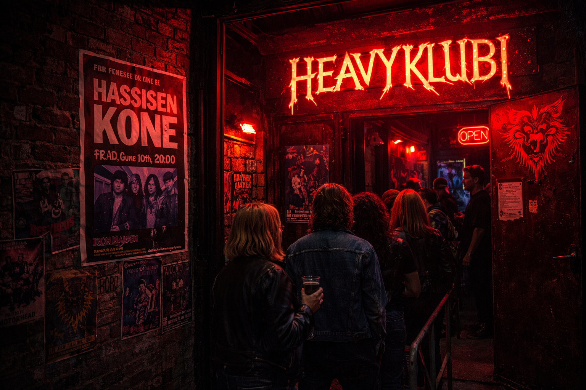

Heavyklubin synty juontaa juurensa 1980-luvulle ja tarkalleen vuoden 1983 marraskuuhun, jolloin keikkapaikan debyytin esitti Hassisen Kone. Tavoitteena oli luoda uusi keikkapaikka joka suosi aikanaan rock ja myöhemmin metal painotteista musiikkia.

Vuosien varrella klubin lavalle on noussut niin kotimaisia suosikkiyhtyeitä kuin taas aivan maailman huippubändejä. Muun muassa Helloween, Iron Maiden, Avenged Sevenfold, Judas Priest sekä Metallica ovat käyneet Heavyklubilla vähintään kerran esiintymässä. Klubille on saatu suuria bändejä soittamaan sen mahtavan ja intiimin tunnelman, laadukkaan äänentoiston sekä maailmanluokan yleisöjen myötä.
Nykyään Heavyklubi on yksi koko Suomen tunnetuimmista keikkapaikoista ja tunnustusta tulee edelleen myös ulkomailta. Se toimii nykyään tärkeänä kohtaamispaikkana ja metallimusiikin symboolina musiikin ystäville.
Klubi perustettiin ja se nousi paikallisten tietoisuuteen
Heavyklubi palkittiin Suomen parhaimpana keikkapaikkana
Heavyklubin lava ja muut tilat remontoidaan nykyisikseen
Heavyklubi jatkaa perinteikästä tykitystään Helsingin yössä